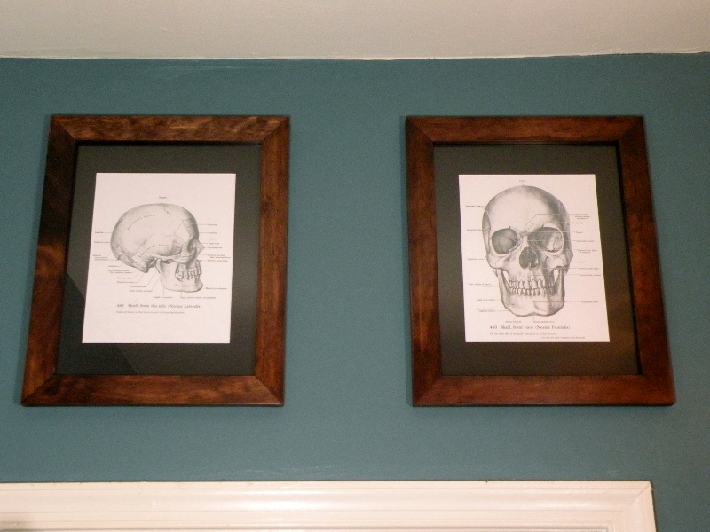

Study of the Human Skull Study of the Human Skull
Study of the Human Skull Study of the Human SkullWhen I was a child, one of my favorite picture books was Grant's Atlas of Anatomy which resided on the bookshelf in my father's office. When I envision a skull, the first image to fill my head will always be plate 460.
A couple years ago, I became interested in framing - the quest for the perfect miter! I wound up buying a very high-precision handsaw to acheive the results I sought, resulting in these two simple frames. When the question arose as to with what they should be filled, I could not think of a more fitting subject to adorn my walls than these plates from my childhood. I scanned the originals, printed them on 100% cotton paper, and the pair are now suitable for any physicians office or natural philosopher's study.
Created by Sean Corron, April 2, 2011.